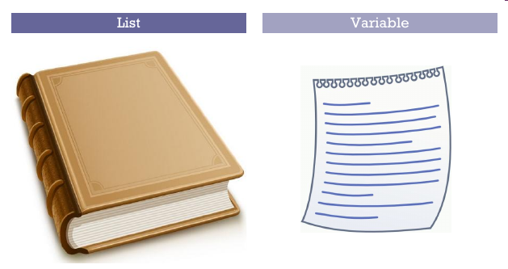

class: center, middle # Lists .author[ CORE-UA 109.01, Joanna Klukowska <br> adapted from slides for CSCI-UA.002 by D. Engle, C. Kapp and J. Versoza ] --- # variables vs. lists * So far we have been working with variables, which can be thought of as _buckets_ that hold a particular piece of data * Variables can only hold one piece of data at a time. Example * `x = 5` * `y = 5.0` * `z = 'hello'` * `q = True` * However, there are times when we need to keep track of multiple pieces of data at the same time, and a single variable is limited to holding just one thing at a time -- * Lists are considered a “sequence” object. Sequence objects have the ability to hold multiple pieces of data at the same time. * We can use a single sequence variable to hold any number of values. * In most programming languages we call these _arrays_. In Python we call these __lists__. --- # variables vs lists .center[  ] --- class: center, middle .section[ # working with lists in Python - basics ] --- # list creation * we can create a list in Python by using the __bracket notation__. ```python my_list = [1, 2, 3] ``` * to create an empty list, we just use a set of square brackets (we'll see soon why one would want an empty list ```python my_list = [] # creates an empty list ``` * to create a list with a preset number of elements with the same value ```python my_list1 = [0] * 10 # creates a list of ten zeros ``` * to create a list with a preset number of elements with the same value ```python my_list1 = [0] * 10 # creates a list of ten zeros my_list2 = ['Amy'] * 5 # creates a list of five strings 'Amy' ``` * we can use the `range()` function to create a list as well - we just need to convert the iterable to a list ```python even_numbers = list(range(0,100,2)) ``` --- # operations on the whole list * we can print the value of a list using the print() function. ```python my_list = [67, 98, 1, 45, 90] print (my_list) ``` output: ``` [67, 98, 1, 45, 90] ``` * we can determine the length of the list by using the `len()` function ```python my_list = [67, 98, 1, 45, 90] print ( len(my_list) ) ``` output: ``` 5 ``` --- # combining lists * __list repetition__ - just use the repetition operator `*` (similar to repeating strings) example: ```python my_list = [1, 2, 3] * 3 print (my_list) ``` output: ``` [1, 2, 3, 1, 2, 3, 1, 2, 3] ``` -- * __list concatenation__ - use he concatenation operator `+` to combine different lists into a single list example: ```python my_list = [1, 2, 3] + [99, 100, 101] print (my_list) ``` output: ``` [1, 2, 3, 99, 100, 101] ``` --- # accessing list elements * in a book we can reference a page by its page number * in a list we can reference an element by its __index__ number * __indexes start at the number zero__ * example: ```python my_list = ['Ann', 'John', 'Kate'] print (my_list[0]) print (my_list[2]) ``` output: ``` Ann Kate ``` -- * we will get an error if we attempt to access an element outside the range of a list. ```python my_list = ['Craig', 'John', 'Chris'] print (my_list[4]) # Index doesn't exist! ``` --- # modifying list elements * we can change elements in the list by assigning a new value to the location at a particular index * example: ```python my_list = [1, 2, 3] print (my_list) ``` output: ``` [1, 2, 3] ``` ```python my_list[1] = 99 print (my_list) ``` output: ``` [1, 99, 3] ``` --- # lists can have multiple names * when we assign a list name to a new variable, we do not create another list, the list is simply given another name * example: ```python mylist1 = [1, 2, 3 ] mylist2 = mylist1 # now we have two different names for the same list print (mylist1) print (mylist2) ``` output: ``` [1, 2, 3] [1, 2, 3] ``` ```python mylist1[0] = 55 # changes the element at index zero in both lists mylist2[1] = 100 # changes the element at index one in both lists print (mylist1) print (mylist2) ``` output: ``` [55, 100, 3] [55, 100, 3] ``` --- # creating a copy of a list * to create a duplicate of a list (the actual second list, not just a different name for the same list) we need to use a trick * `[]` in python denotes an empty list * concatenating an empty list with an existing list creates a new list: ```python mylist = [1, 2, 3 ] mylist_copy = [] + mylist #creates a new list mylist[2] = 5 print(mylist) print(mylist_copy) ``` output: ``` [1, 2, 5] [1, 2, 3] ``` --- class: center, middle .section[ # iterating over lists ## (we did some of it before) ] --- # using a `for` loop * the target variable assumes the value of each element in the list in order * example ```python mylist = [1, 2, 3] for num in mylist : print (num) ``` output: ``` 1 2 3 ``` --- # write a program: count B's * let's write a program that given a list of grades counts the number of grades corresponding to a B * scores greater than or equal to 80 and less than 90 correspond to B ```python grades = [89,100,70,45,76,84,93,81,36,99,79] # FINISH THIS CODE ``` -- ```python grades = [89,100,70,45,76,84,93,81,36,99,79] count = 0 for grade in grades: if grade < 90 and grade >= 80 : count = count + 1 print (count) ``` --- # changing values of the list * consider the following code, what do you think it should do? ```python mylist = [10, 20, 30] for num in mylist: num = num * 2 print (num) ``` -- * you might expect that the list gets changed to `[20, 40, 60]`, __but that is not the case__ * the above code does not change the list at all, the only changes are made to the target variable -- * to change the content of the list, we need to access its elements using an index for the elements that should be modfied .left-column2[ ```python mylist = [10, 20, 30] for index in range(3): mylist[index] = mylist[index] * 2 print (num) ``` ] .right-column2[ or ```python mylist = [10, 20, 30] for index in range( len(mylist) ): mylist[index] = mylist[index] * 2 print (num) ``` ] --- # write a program: change the list * Given the following list of prices, write a program that modifies the list to include 8% sales tax ```python prices = [1.99, 2.99, 3.99, 4.99, 5.99, 6.99] ``` * Given the following list of values, write a program that multiplies the values by 2 if the original value is odd (it should leave the even values unchanged) ```python values = [12, 32, 17, 5, 12, 11, 19, 0, 1, 6] ``` --- class: center, middle .section[ # useful functions for working with lists ] --- # finding items in the list using __`in`__ - __`in`__ allows us to test if an element is in the list or not .left-column2[ ```python my_list = ['pie', 'cake', 'pizza'] if 'cake' in my_list: print ("I found cake!") else: print ("No cake found.") ``` output: ``` I found cake ``` ] .righ-column2[ ```python my_list = ['pie', 'cake', 'pizza'] if 'candy' in my_list: print ("I found candy!") else: print ("No candy found.") ``` output: ``` No candy found. ``` ] -- .below-column2[ * try it yourself: * given these two lists: ``` a = [1,2,3,4,5] b = [2,3,10,11,12,1] ``` * write a program that finds all elements that exist in both lists (i.e. the integer 2 exists in both lists) * store your result in a list and print it out to the user ] --- # adding/appending items to a list * we have already seen a few ways in which we can add items to lists: * repeat the list using the `*` operator * concatenate the list using the `+` operator * another way to add items to a list is to use the __`append()`__ method * this function is part of the list data type * it adds new element at __the end__ of the list * example ```python mylist = ['Christine', 'Jasmine', 'Renee'] mylist.append('Kate') print (mylist) ``` output: ``` ['Christine', 'Jasmine', 'Renee', 'Kate'] ``` -- * notice that the `append()` function is called using the __dot operator__ - this operator is used to __call a function on__ a list --- # sorting list elements * we can have Python sort items in a list using the __`sort()`__ function * example: ```python my_list = ['pie', 'cake', 'pizza'] my_list.append('apple') print (my_list) my_list.sort() print (my_list) ``` output: ``` ['pie', 'cake', 'pizza', 'apple'] ['apple', 'cake', 'pie', 'pizza'] ``` --- # write a program: sorted names * write a program that prompts the user for a sequence of names and then prints them in an alphabetical order * the user should enter "none" to indicate the last value was entered * the program should store the names in a list and then print the sorted list of all the names entered --- # finding the position of an item in the list * we can use the __`index()`__ function to ask Python to tell us the index of an item in a list * the `index()` function takes one argument - an element to search for - and returns an integer value of where that element can be found. * warning: the `index()` function will cause an error if it cannot find the item in the list * example: ```python my_list = ['pizza', 'pie', 'cake'] if 'pie' in my_list: location = my_list.index('pie') print ('pie is at postion #', location) else: print ('there is no pie!') ``` --- # write a program: find the price * given that the following lists match up with one another (i.e. the product at the first position of the products list matches the price at the first position in the prices list), write a product price lookup program ``` products = ['peanut butter', 'jelly', 'bread'] prices = [3.99, 2.99, 1.99] ``` * the user should be prompted for the product name * if the product exists, its price should be printed back * if the product does not exist, the message "we do not have ..." should be printed (the ... should be replaced by the name of the requested product) * (feel free to extend the list to make the program more interesting) --- # finding smallest and largest * Python has two built in functions that let us get the highest and lowest values in a list * __`min()`__ * __`max()`__ * example: ```python prices = [2,59, 3.99, 2.99, 7.99, 1.99, 14.95, 3.17, 4.55] biggest = max(prices) smallest = min(prices) print (smallest, 'up to', biggest) ``` --- # removing elements from a list * we can remove an item from a list by using the __`remove`__ function * example: ```python prices = [3.99, 2.99, 1.99] prices.remove(2.99) print (prices) ``` * warning: trying to remove an element that is not in a list will result in an error --- class: center, middle .section[ # programming challenges ] --- # colors .center[ ] - ask the user for 5 colors but don't allow duplicate values (i.e., your code has to reject duplicates if the user enters them) - sort the colors in alphabetical order - print the sorted list --- # grades Write a program that asks the user to continually enter in the following information for a group of students who just completed their first exam: - name - grade received Save that information in a list. To indicate the end of the list, the user will enter "none" for the name and "-1" for the grade. Calculate and print the following information based on the data (use the list functions discussed in these slides): - number of students who took the exam - average grade on the exam - lowest grade on the exam - the name of the student who received the lowest grade - highest grade on the exam - the name of the student who received the highest grade - standard deviation of the grades on the exam - median of the grades on the exam Extra challenge: - print the names and grades sorted alphabetically by student names --- --- ---